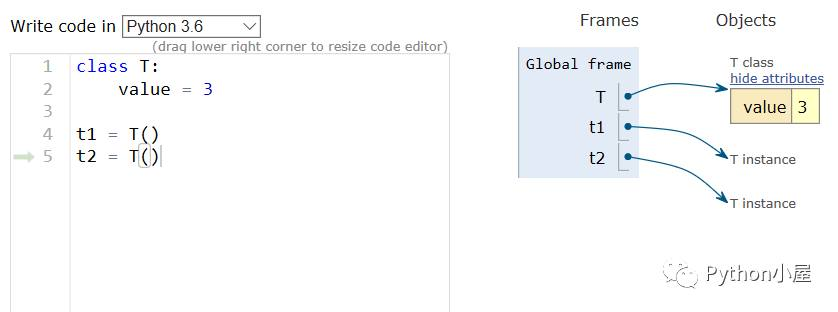
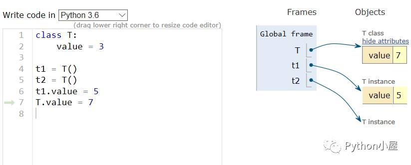
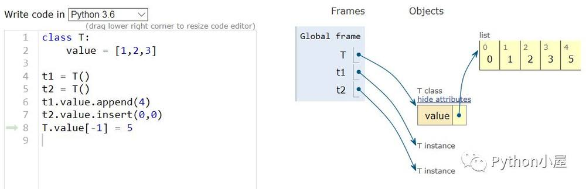
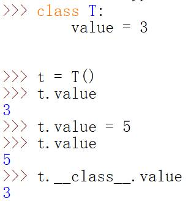

第 1 页 · 面向对象编程是最有效的软件编写方法之一。在面向对象编程中，编写表示现实世界中的事物和情景的类，并基于这些类来创建对象。
面向对象编程是最有效的软件编写方法之一。在面向对象编程中，编写表示现实世界中的事物和情景的类，并基于这些类来创建对象。
编写类时，会定义一大类对象都有的通用行为。基于类创建对象时，每个对象都自动具备这种通用行为，然后可根据需要赋予每个对象独特的个性。使用面向对象编程可模拟现实情景，效果极其逼真。
理解面向对象编程有助于像程序员那样看世界，还可以帮助真正明白自己编写的代码：不仅是各行代码的作用，还有代码背后更宏大的概念。了解类背后的概念可培养逻辑思维，能够通过编写程序来解决遇到的几乎任何问题。
学习面向对象编程的意义
第 2 页 · 面向对象程序设计（Object Oriented Programming，OOP）主要针对大型软件设计而提出，使得软件设
面向对象程序设计（Object Oriented Programming，OOP）主要针对大型软件设计而提出，使得软件设计更加灵活，能够很好地支持代码复用和设计复用，并且使得代码具有更好的可读性和可扩展性。
基本原则是计算机程序由多个能够起到子程序作用的单元或对象组合而成，大大地降低了软件开发的难度。
关键性观念是将数据以及对数据的操作封装在一起，组成一个相互依存、不可分割的整体，即对象。对于相同类型的对象进行分类、抽象后，得出共同的特征而形成了类，面向对象程序设计的关键就是如何合理地定义和组织这些类以及类之间的关系。
面向对象程序设计
第 3 页 · 面向对象程序设计
面向对象程序设计
Python完全采用了面向对象程序设计的思想，是真正面向对象的高级动态编程语言，完全支持面向对象的基本功能，如封装、继承、多态以及对基类方法的覆盖或重写。
Python中对象的概念很广泛，Python中的一切内容都可以称为对象，除了数字、字符串、列表、元组、字典、集合、range对象、zip对象等等，函数也是对象，类也是对象。
创建类时用变量形式表示的对象属性称为数据成员，用函数形式表示的对象行为称为成员方法，成员属性和成员方法统称为类的成员。
第 4 页 · 6.1.1 类定义语法
6.1.1 类定义语法
Python使用class关键字来定义类，class关键字之后是一个空格，然后是类的名字，再然后是一个冒号，最后换行并定义类的内部实现。
注意：类名的首字母一般要大写，也可以按照自己的习惯定义类名，但一般推荐参考惯例来命名，并在整个系统的设计和实现中保持风格一致，这一点对于团队合作尤其重要。
class Car: # 定义类
def infor(self): # 定义成员方法
print(" This is a car ")
第 5 页 · 6.1.1 类定义语法
6.1.1 类定义语法
定义了类之后，可以用来实例化对象，并通过“对象名.成员”的方式来访问其中的数据成员或成员方法。
car = Car()
car.infor()
class Car:
price = 100000
def __init__(self, c):
self.color = c
car.price
在Python中，可以使用内置方法isinstance()来测试一个对象是否为某个类的实例。
isinstance(car, Car) # True
isinstance(car, str) # False
第 6 页 · 6.1.1 类定义语法
6.1.1 类定义语法
Python提供了一个关键字“pass”，表示空语句，可以用在类、函数定义或者选择结构中。
当暂时没有确定如何实现功能、为以后的软件升级预留空间，或者其他类型功能时，可以使用关键字“pass”来“占位”。
class A:
pass
def demo():
pass
if 5>3:
pass
第 7 页 · 6.1.2 self参数
6.1.2 self参数
7
class Dog： #一次模拟小狗的简单尝试
def _init_(self,name,age): #初始化属性name和age
self.name = name
self.age = age
def sit(self): #模拟小狗被命令时蹲下
print(self.name.title() + ‘is now sitting’)
def roll_over(self): #模拟小狗被命令时打滚
print(self.name.title() + ‘is rolled_over!’)
第 8 页 · 6.1.2 self参数
6.1.2 self参数
类的所有方法都必须至少有一个名为self的参数，并且必须是方法的第一个形参（如果有多个形参的话），self参数代表要创建的对象本身。
在类的实例方法中访问实例属性时需要以self为前缀。
在外部通过对象调用对象方法时并不需要传递这个参数，如果在外部通过类调用对象方法则需要显式为self参数传值。（下节课学习）
在Python中，在类中定义方法时将第一个参数定义为“self”只是一个习惯，而实际上不必须使用“self”这个名字，尽管如此，建议编写代码时仍以self作为方法的第一个参数名字。
第 9 页 · 6.1.3 类成员与实例成员
6.1.3 类成员与实例成员
属于实例的数据成员一般是指在构造函数_ _init_ _()中定义的，定义和使用时必须以self作为前缀；属于类的数据成员是在类中所有方法之外定义的。
class Car:
price = 100000 #定义类属性
def _ _init_ _(self, c):
self.color = c #定义实例属性
第 10 页 · 6.1.3 类成员与实例成员
6.1.3 类成员与实例成员
在主程序中（或类的外部），实例属性属于实例(对象)，只能通过对象名访问；而类属性属于类，可以通过类名或对象名都可以访问。
在实例方法中可以调用该实例的其他方法，也可以访问类属性以及实例属性。
class Car:
price = 100000 #定义类属性
def __init__(self, c):
self.color = c #定义实例属性
car1 = Car("Red") #实例化对象
car2 = Car("Blue")
print(car1.color, Car.price) #查看实例属性和类属性的值
第 11 页 · 6.1.3 类成员与实例成员
6.1.3 类成员与实例成员
在Python中，可以动态地为自定义类和对象增加或删除成员，这一点是和很多面向对象程序设计语言不同的，也是Python动态类型特点的一种重要体现。
class Car:
price = 100000 #定义类属性
def __init__(self, c):
self.color = c #定义实例属性
car1 = Car("Red") #实例化对象
car2 = Car("Blue")
print(car1.color, Car.price) #查看实例属性和类属性的值
Car.price = 110000 #修改类属性
Car.name = 'QQ' #动态增加类属性
car1.color = "Yellow" #修改实例属性
print(car2.color, Car.price, Car.name)
print(car1.color, Car.price, Car.name)
第 12 页 · 6.1.3 类成员与实例成员
6.1.3 类成员与实例成员
（续上页代码：）
import types
def setSpeed(self, s):
self.speed = s
car1.setSpeed = types.MethodType(setSpeed, car1) #动态增加成员方法
car1.setSpeed(50) #调用成员方法
print(car1.speed)
在Python中，函数和方法是有区别的。方法一般指与特定实例绑定的函数，通过对象调用方法时，对象本身将被作为第一个参数隐式传递过去，普通函数并不具备这个特点。但是函数也是一个属性，所以它也可以动态地添加到实例上，只是需要先用 types.MethodType() 把一个函数变为一个方法。
提示：
第 13 页 · 补充：Python类型的动态性使得我们可以动态为自定义类及其对象增加新的属性和行为，俗称混入（mixin）机制，这在大型
补充：Python类型的动态性使得我们可以动态为自定义类及其对象增加新的属性和行为，俗称混入（mixin）机制，这在大型项目开发中会非常方便和实用。
例如：系统中的所有用户分类非常复杂，不同用户组具有不同的行为和权限，并且可能会经常改变。这时候我们可以独立地定义一些行为，然后根据需要来为不同的用户设置相应的行为能力，进行更新。
6.1.3 类成员与实例成员
第 14 页 · >>> import types
>>> import types
>>> class Person(object):
def __init__(self, name):
assert isinstance(name, str), 'name must be string'
self.name = name
>>> def sing(self):
print(self.name+' can sing.')
>>> def walk(self):
print(self.name+' can walk.')
>>> def eat(self):
print(self.name+' can eat.')
6.1.3 类成员与实例成员
第 15 页 · >>> zhang = Person('zhang')
>>> zhang = Person('zhang')
>>> zhang.sing() #用户不具有该行为
AttributeError: 'Person' object has no attribute 'sing'
>>> zhang.sing = types.MethodType(sing, zhang) #动态增加一个新行为
>>> zhang.sing()
zhang can sing.
>>> zhang.walk()
AttributeError: 'Person' object has no attribute 'walk'
>>> zhang.walk = types.MethodType(walk, zhang)
>>> zhang.walk()
zhang can walk.
>>> del zhang.walk #删除用户行为
>>> zhang.walk()
AttributeError: 'Person' object has no attribute 'walk'
6.1.3 类成员与实例成员
第 16 页 · 6.1.3 类成员与实例成员
6.1.3 类成员与实例成员
补充：在Python中，变量并不直接存储值，而是存储值的引用。列表、元组、字典、集合以及其他容器类对象中的元素也是存储值的引用。对象中的成员也是存储的引用。
自定义类的数据成员(类属性)是该类所有对象共有的，既可以通过类访问，也可以通过该类任意对象进行访问。

第 17 页 · 6.1.3 类成员与实例成员
6.1.3 类成员与实例成员
如果通过类把成员的值进行了修改，该类对象都能得到体现。然而，如果通过其中某个对象修改了value的值，不会影响类和该类其他对象。
修改t1.value的值之后，t1.value不再共享类的数据成员。
修改T.value之后，不影响已改变的t1.value，并且t2.value仍然共享类的数据成员。

第 18 页 · 6.1.3 类成员与实例成员
6.1.3 类成员与实例成员
但是，当类成员value为列表[1,2,3]时，相应的进行一系列修改之后，内存布局如图，不管是通过类还是通过该类的对象，只要使用列表自身的原地修改方法或者下标的形式，修改的都是同一个列表。

第 19 页 · 6.1.3 类成员与实例成员
6.1.3 类成员与实例成员
可以通过下面的形式访问对象所属类被暂时隐藏的成员。

第 20 页 · 课程小节
课程小节
20
类定义的语法
self参数
类成员与实例成员
第 21 页 · 讨论题
讨论题
21
什么是类成员？什么是实例成员？
第 22 页 · 面向对象编程的2个非常重要的概念：类和对象是面向对象编程的核心。
面向对象编程的2个非常重要的概念：类和对象是面向对象编程的核心。
1、类的概念
在使用对象的过程中，将具有共同特征和行为的一组对象抽象定义——类。
类是对象的模板。例如：人类，是人这种生物的模板。人类，汽车类，鸟类，狗类，都是多个具有相同特征事物的合集概念。
2、对象的概念（万事万物皆对象）
对象是具体事物，具有唯一性，一定能确定是哪一个的就是对象。例如：周杰伦、地球、老王的宝马、小李的泰迪
注意：类、对象、子类
22
第 23 页 · 3、子类的概念
3、子类的概念
通过继承现有的其他类来创建一个类。子类和父类主要描述的是类之间的继承关系，即所属关系。
继承的类可在被继承的类的基础上添加格外的参数和行为，新类称为子类，扩展类；被继承的类称为基类、父类或者超类。
4、继承关系
子类与父类的关系是 “is” 的关系，如上Cat 继承于 Animal 类，我们可以说：
“Dog”是 Animal 类的实例，但“Dog”不是 Cat 类的实例。
“蓝猫”是 Animal 类的实例，“蓝猫”也是 Cat 类的实例。
注意：类、对象、子类
23
第 24 页 · 大众汽车（类）：没办法确定哪一辆，大众生产的都叫大众汽车。
大众汽车（类）：没办法确定哪一辆，大众生产的都叫大众汽车。
大众宝来汽车（类）：大众宝来也是所有宝来汽车的类，只不过比大众汽车的范围小一点而已，也可以理解为大众宝来汽车类是大众汽车类的子类。
我的大众汽车（对象）：可以确定，因为我就一辆大众汽车。
大黄狗（类）：因为所有大一点的黄色的都叫大黄狗，没办法确定哪一个
金毛（类）：金毛也是一类狗的统称，没办法确定唯一的一个。
我的金毛（对象）：可以确定，具有唯一性。
注意：类、对象、子类
24
第 25 页 · 6.1.4 私有成员与公有成员
6.1.4 私有成员与公有成员
在Python中，以下划线开头的变量名和方法名有特殊的含义，尤其是在类的定义中。
_xxx：受保护成员，保护成员一般都是可以访问的，但是不能用'from module import *'导入；
_ _xxx_ _：系统定义的特殊成员；
_ _xxx：私有成员，只有类对象自己能访问，子类对象不能直接访问到这个成员，但在对象外部可以通过“对象名._类名_ _xxx”这样的特殊方式来访问。
xxx：公有成员；
>>> x = 1 # 公有成员
>>> _ _z = 3 # 私有成员
25
第 26 页 · 6.1.4 私有成员与公有成员
6.1.4 私有成员与公有成员
26
>>> class A:
def __init__(self, value1=0, value2=0):
self.value1 = value1
self._ _value2 = value2
def setValue(self, value1, value2):
self.value1 = value1
self.__value2 = value2
def show(self):
print(self.value1)
print(self.__value2)
>>> a = A()
>>> a.value1
0
>>> a._A_ _value2 #在外部访问对象的私有数据成员
0
第 27 页 · 6.1.4 私有成员与公有成员
6.1.4 私有成员与公有成员
在IDLE、Spyder、PyCharm等Python开发环境中，在对象或类名后面加上一个圆点“.”，稍等一秒钟则会自动列出其所有公开成员，模块也具有同样的用法。
如果在圆点“.”后面再加一个下划线，则会列出该对象、类或模块的所有成员，包括私有成员。
27
第 28 页 · 6.1.4 私有成员与公有成员
6.1.4 私有成员与公有成员
在交互模式下，一个下划线“_”表示解释器中最后一次显示的内容或最后一次语句正确执行的输出结果。
>>> 3 + 5
8
>>> 8 + 2
10
>>> _ * 3
30
>>> _ / 5
6.0
>>> 1 / 0
ZeroDivisionError: integer division or modulo by zero
>>> _
6.0
28
第 29 页 · 在程序中，可以使用一个下划线来表示不关心该变量的值。
在程序中，可以使用一个下划线来表示不关心该变量的值。
>>> for _ in range(5):
print(3, end=' ')
3 3 3 3 3
>>> a, _ = divmod(60, 18) #只关心整商，不关心余数，
#等价于a = 60//18
>>> a
3
6.1.4 私有成员与公有成员
29